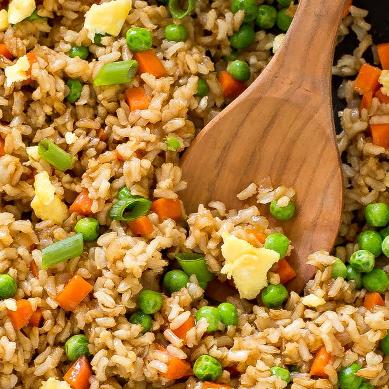

Fried Rice
This asian classic will never disappoint. Made with simple ingredients, this inexpensive meal will satisfy your tastebuds. It's even customizable. You can put in any meat or vegetable you like! Try it out and impress your asian friends today!

Ingredients
- 4 cups cooked day-old rice
- 1 cup cooked BBQ pork, diced
- 1 cup frozen peas, thawed
- 1/2 onion, minced
- 3 cloves garlic, minced
- 2 Tbsp soy sauce
- 1-2 Tbsp oyster sauce
- 1 tsp salt
- 2-3 eggs, scrambled
- 1-4 cup green onions
Directions
- Coat wok or skillet with olive oil and set to high
- Saute onions and garlic until translucent
- Add pork, soy sauce, salt, pepper to the wok and stir for 3 minutes
- Add oyster sauce and stir
- Once most of moisture is gone, add the rice
- Add more soy sauce, oyster sauce, pepper, chili oil, sesame oil to taste and toss
- Add peas and continue to toss
- Make space in the middle of the wok for eggs
- Scramble the eggs and incorporate into mixture
- Add green onions and continue to cook to remove moisture
"Fried rice! I'd never had this before, but it is soooo good. I love peas, so they were a great addition to this recipe."
"I. LOVED. IT."
"A wonderful combo of veggies and leftovers. I'm trying to save money and this recipe really helped me stop wasting food."